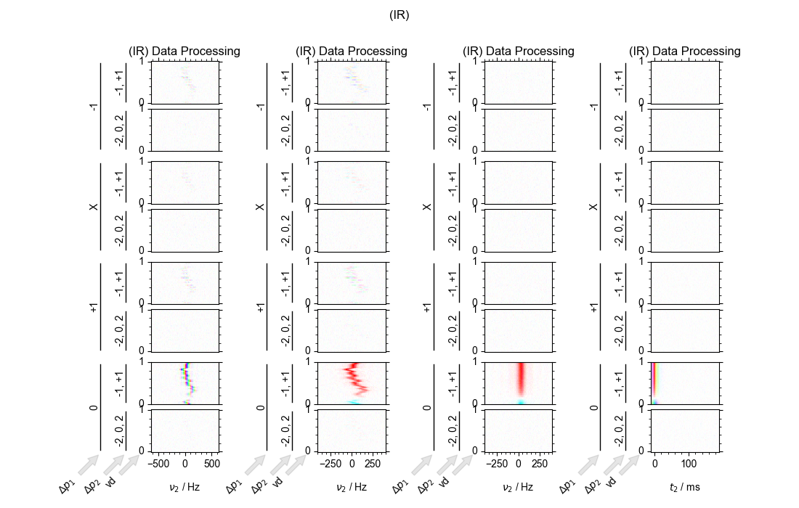
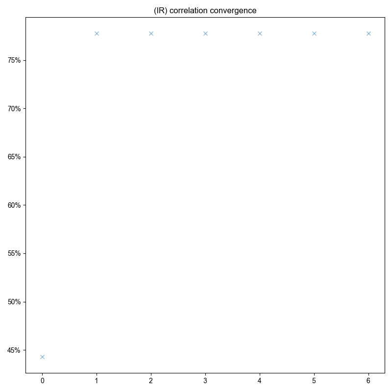
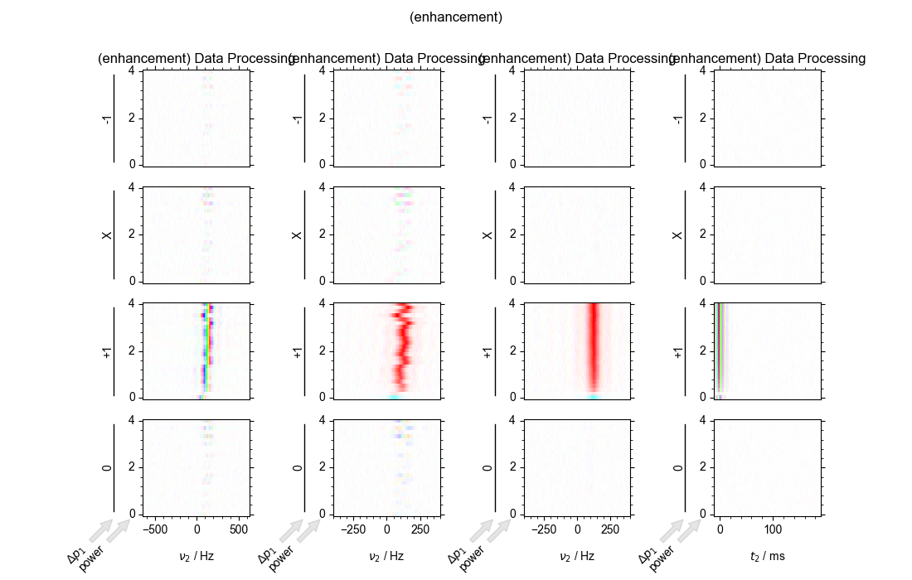
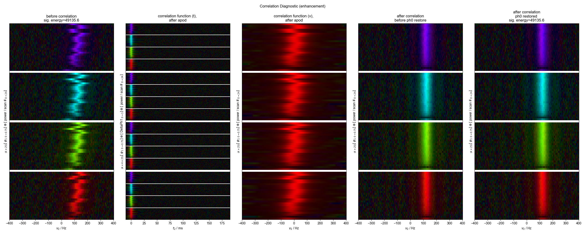
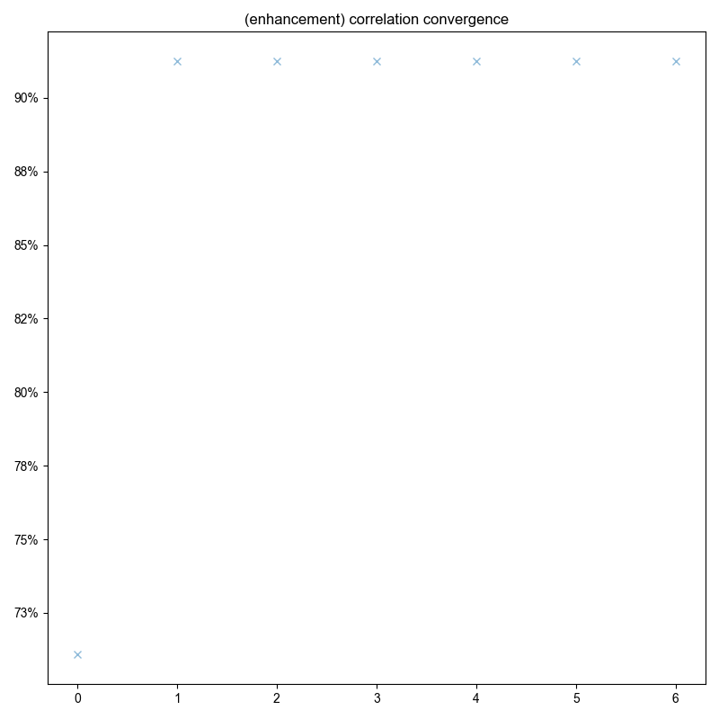

Note
Go to the end to download the full example code
Align data with significant frequency drift¶
Takes a 2D data set and applies proper phasing corrections followed by aligning the data through a correlation routine.
- 
- 
- 
- 
- 
c:\users\jmfranck\git_repos\proc_scripts\pyspecProcScripts\first_level\fake_data.py:58: SymPyDeprecationWarning:
Passing the function arguments to lambdify() as a set is deprecated. This
leads to unpredictable results since sets are unordered. Instead, use a list
or tuple for the function arguments.
See https://docs.sympy.org/latest/explanation/active-deprecations.html#deprecated-lambdify-arguments-set
for details.
This has been deprecated since SymPy version 1.6.3. It
will be removed in a future version of SymPy.
thefunction = lambdify(mysymbols, expression, "numpy")
from pyspecdata import *
from pyspecProcScripts import *
from pylab import *
import sympy as s
from collections import OrderedDict
from numpy.random import normal, seed
seed(2021)
rcParams["image.aspect"] = "auto" # needed for sphinx gallery
# sphinx_gallery_thumbnail_number = 4
t2, td, vd, power, ph1, ph2 = s.symbols("t2 td vd power ph1 ph2")
echo_time = 10e-3
f_range = (-400, 400)
with figlist_var() as fl:
for expression, orderedDict, signal_pathway, indirect, label in [
(
(
23
* (1 - 2 * s.exp(-vd / 0.2))
* s.exp(+1j * 2 * s.pi * 100 * (t2) - abs(t2) * 50 * s.pi)
),
[
("vd", nddata(r_[0:1:40j], "vd")),
("ph1", nddata(r_[0:4] / 4.0, "ph1")),
("ph2", nddata(r_[0, 2] / 4.0, "ph2")),
("t2", nddata(r_[0:0.2:256j] - echo_time, "t2")),
],
{"ph1": 0, "ph2": 1},
"vd",
"IR",
),
(
(
23
* (1 - (32 * power / (0.25 + power)) * 150e-6 * 659.33)
* s.exp(+1j * 2 * s.pi * 100 * (t2) - abs(t2) * 50 * s.pi)
),
[
("power", nddata(r_[0:4:25j], "power")),
("ph1", nddata(r_[0:4] / 4.0, "ph1")),
("t2", nddata(r_[0:0.2:256j] - echo_time, "t2")),
],
{"ph1": 1},
"power",
"enhancement",
),
]:
fl.basename = "(%s)" % label
fig, ax_list = subplots(1, 4, figsize=(7, 7))
fig.suptitle(fl.basename)
fl.next("Data Processing", fig=fig)
data = fake_data(expression, OrderedDict(orderedDict), signal_pathway)
data.reorder([indirect, "t2"], first=False)
data.ft("t2")
data /= sqrt(ndshape(data)["t2"]) * data.get_ft_prop("t2", "dt")
fl.image(data, ax=ax_list[0], human_units=False)
ax_list[0].set_title("Raw Data")
data = data["t2":f_range]
data.ift("t2")
data /= zeroth_order_ph(select_pathway(data, signal_pathway))
# }}}
# {{{ Applying the phase corrections
best_shift = hermitian_function_test(
select_pathway(data.C.mean(indirect), signal_pathway)
)
data.setaxis("t2", lambda x: x - best_shift).register_axis({"t2": 0})
data.ft("t2")
fl.image(data, ax=ax_list[1])
ax_list[1].set_title("Phased and \n Centered")
# }}}
# {{{ Applying Correlation Routine to Align Data
mysgn = select_pathway(data, signal_pathway).C.real.sum("t2").run(np.sign)
# this is the sign of the signal -- note how on the next line,
# I pass sign-flipped data, so that we don't need to worry about
# messing with the original signal
data.ift(list(signal_pathway.keys()))
opt_shift, sigma, mask_func = correl_align(
data * mysgn,
indirect_dim=indirect,
signal_pathway=signal_pathway,
sigma=3000 / 2.355,
max_shift=300, # this makes the Gaussian mask 3
# kHz (so much wider than the signal), and
# max_shift needs to be set just wide enough to
# accommodate the drift in signal
fl=fl
)
# removed display of the mask (I think that's what it was)
data.ift("t2")
data *= np.exp(-1j * 2 * pi * opt_shift * data.fromaxis("t2"))
data.ft(list(signal_pathway.keys()))
data.ft("t2")
fl.image(data, ax=ax_list[2], human_units=False)
ax_list[2].set_title("Aligned Data (v)")
data.ift("t2")
fl.image(data, ax=ax_list[3], human_units=False)
ax_list[3].set_title("Aligned Data (t)")
fig.tight_layout(rect=[0, 0.03, 1, 0.95])
# }}}
Total running time of the script: ( 0 minutes 44.207 seconds)